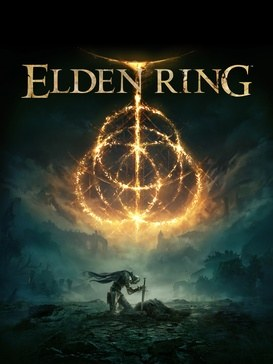

RPG d'action en monde ouvert
RPG d'action en monde ouvert
Cyberpunk 2077
CD Projekt RED · PC, PS5, Xbox Series, Switch 2
Night City, ses gangs, ses fixers et ses implants : toutes les missions, tous les contrats et l'extension, sans rien laisser derrière toi.
Interligne
Espacement des lettres
Police
RPG d'action en monde ouvert · 2022
Paldea de bout en bout : les 8 arènes, les 5 Dominants, la Team Star, les 171 Capsules Techniques, puis Septentria et l'Institut Myrtille jusqu'au 100 %.

Clique sur une partie pour l'ouvrir directement dans le guide. Les compteurs suivent les cases que tu coches.
RPG d'action en monde ouvert
CD Projekt RED · PC, PS5, Xbox Series, Switch 2
Night City, ses gangs, ses fixers et ses implants : toutes les missions, tous les contrats et l'extension, sans rien laisser derrière toi.
 Souls-like
Souls-like
FromSoftware · PC, PS4, Xbox One
Zone par zone, dans l'ordre le plus sûr : chaque boss, chaque PNJ, chaque objet, jusqu'aux deux extensions.

Souls-like en monde ouvertFromSoftware · PC, PS5, PS4, Xbox Series, Xbox One
L'Entre-Terre région par région, puis le Royaume des Ombres : sites de grâce, quêtes de PNJ, boss et trésors.